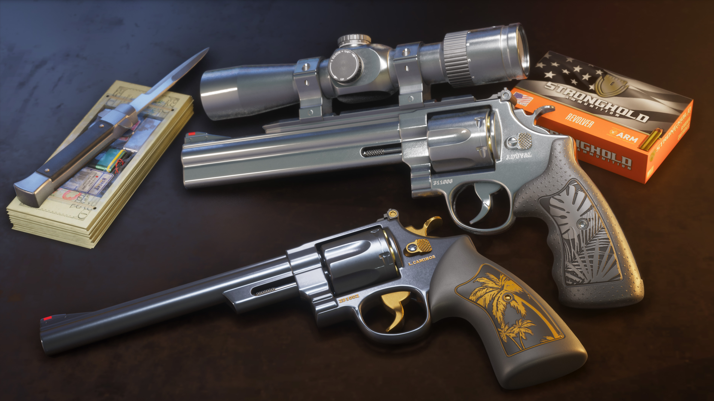

Hawk & Little Morgan Revolvers
Hawk & Little Morgan Revolvers é o nome oficialmente utilizado pela Rockstar Games para um conjunto de revólveres incluído no Grand Theft Auto VI Ultimate Edition Upgrade. Dois screenshots oficiais dedicados ao conjunto já foram publicados.

O que sabemos até agora
A Rockstar Games lista Hawk & Little Morgan Revolvers oficialmente entre os conteúdos do GTA VI Ultimate Edition Upgrade.
A biblioteca oficial de mídia possui também duas imagens específicas identificadas como Hawk & Little Morgan Revolvers 01 e 02.
O material atual confirma a existência do conjunto, mas ainda não fornece uma ficha técnica detalhada para cada revólver.

Ainda não confirmado: calibre, dano, cadência, alcance, capacidade, velocidade de recarga, preço, localização, método exato de obtenção dentro da história ou diferenças técnicas entre os dois revólveres.
Por que os dois ficam na mesma ficha?
A própria Rockstar apresenta o conteúdo como Hawk & Little Morgan Revolvers. Por enquanto, essa é a forma mais segura de organizar a Wiki sem criar separações que ainda não foram explicadas oficialmente.
O nome aparece dentro da denominação oficial do conjunto, mas esta ficha não atribui especificações próprias ao Hawk sem confirmação adicional.
O mesmo vale para Little Morgan: não vamos assumir características, funcionamento ou valores individuais ainda não divulgados.
Galeria oficial
A Rockstar publicou duas imagens dedicadas especificamente aos Hawk & Little Morgan Revolvers.
O que vamos testar
Quando GTA VI estiver disponível, esta página poderá comparar os dois revólveres diretamente dentro do jogo.
Dano
Diferença real de poder entre as armas.
Precisão
Comportamento e dispersão dos disparos.
Recarga
Funcionamento e tempo necessário.
Comparação
Hawk versus Little Morgan, se aplicável.
O que poderá ser modificado?
A Rockstar já confirmou a existência de Personalized Weapon Variants como outro conteúdo do Ultimate Edition Upgrade. Isso, porém, não significa automaticamente que todas as opções desse sistema se apliquem especificamente aos Hawk & Little Morgan Revolvers.
Esta ficha só relacionará modificações a estes revólveres quando houver informação suficiente ou verificação direta no jogo.
Gameplay dos Hawk & Little Morgan Revolvers
Depois do lançamento, esta área receberá uma gameplay própria do GTA6Zoone.
Podemos mostrar os dois revólveres em uso, animações, mira, recarga, som, dano, alcance e possíveis diferenças entre eles.
Informações que ainda serão verificadas
Nenhum desses campos receberá números ou valores estimados somente para preencher a página.
Dano
Desempenho real de cada revólver.
Capacidade
Quantidade real de munição.
Cadência
Ritmo de disparo verificado.
Recarga
Tempo e animação de recarga.
Alcance
Eficiência em diferentes distâncias.
Obtenção
Como o conteúdo será liberado na história.
Personalização
Opções específicas disponíveis.
Comparação
Diferenças práticas entre Hawk e Little Morgan.
O que podemos afirmar hoje
Essa é a denominação utilizada pela Rockstar em seus materiais oficiais de GTA VI.
O conjunto aparece explicitamente entre os conteúdos oficiais do Upgrade.
A biblioteca da Rockstar possui imagens identificadas como 01 e 02.
Não atribuímos valores técnicos aos revólveres sem confirmação ou teste direto no jogo.
Rockstar Games
Esta ficha utiliza somente informações oficialmente publicadas pela Rockstar Games sobre os Hawk & Little Morgan Revolvers e as edições de GTA VI.
Rockstar Games — GTA VI Screenshots